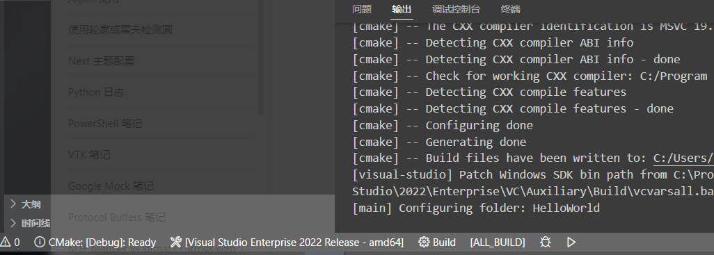
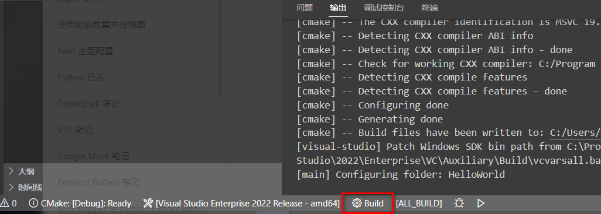
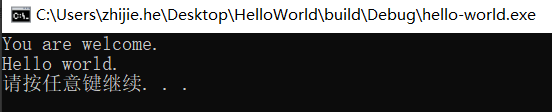

一直以来我都是把 VSCode 当作一个文本编辑器，查看、编辑文本用。突然有一天发现在公司电脑上用 VSCode 编写代码不会被加密，又因为使用 CMake 编译 Qt 工程时需要文件是不加密的（应该是 moc 程序没有加入到公司加密程序列表里，只要头文件中有 Q_OBJECT 的声明，就不行），于是考虑在 VSCode 中编写代码，利用插件生成 VS 工程，编译代码，调试程序等等一些过程。
需要安装的软件
- Visual Studio。当然也可以选择其他的编译器，比如：mingw。
- VSCode
- CMake
需要安装的 VSCode 插件
- C/C++
- CMake
- CMake Tools
编写一个最小的 CMake 工程
# CMakeLists.txt
cmake_minimum_required(VERSION 3.18)
project(HelloWorld CXX)
add_executable(hello-world main.cpp)
#include <iostream>
int main(int argc, char *argv[]) {
if(argc > 1) {
std::cout << argv[1] << std::endl;
}
std::cout << "Hello world." << std::endl;
}
在 VSCode 中配置程序
在 VSCode 中按下 CTRL+SHIFT+P，选择 CMake 配置，在弹出的对话框中选择编译器，待CMake配置完成后，输出

注意：VSCode 会自动在当前文件夹下新建一个 build 文件夹，里面用于存放 CMake 的配置输出。
选择状态栏的 Build 按钮，进行编译

成功后，我们就可以运行程序了！
点击下方的 Launch the selecte target，就可以运行程序了（PS，如果有多个可执行文件，也可以在这里选择其他的目标工程运行）。
在 VSCode 中调式程序
本文的重点来了。我们该怎么在 VSCode 中调试程序呢？
其实，很简单，借助于 CMake Tools 工具，我们只需要在代码中添加断点，点击任务栏的调试（Debug）按钮就可以进行调试了。
但是，但是，这种调试方式，我们不能输入任何命令行参数！该怎么办呢？
答案是：使用 VSCode 的调试配置。
在 .vscode 文件夹下，新建一个 launch.json 文件，并将下面的内容输入到文件中。
{
// 使用 IntelliSense 了解相关属性。
// 悬停以查看现有属性的描述。
// 欲了解更多信息，请访问：https://go.microsoft.com/fwlink/?linkid=830387
"version": "0.2.0",
"configurations": [
{
"name": "(msvc) Launch",
"type": "cppvsdbg",
"request": "launch",
"program": "${command:cmake.launchTargetPath}",
"args": [],
"stopAtEntry": false,
"cwd": "${workspaceRoot}",
"environment": [
{
"name": "PATH",
"value": "${env:PATH}:${command.cmake.getLaunchTargetDirectory}"
}
],
"console": "externalTerminal"
}
]
}
在菜单栏选择 运行->启动调试，便可以调试程序了。
这里，我尝试输入一个参数，即修改上面配置文件的 args字段：
"args": ["You are welcome."],
运行调试程序，输出：

终于，过程通了！